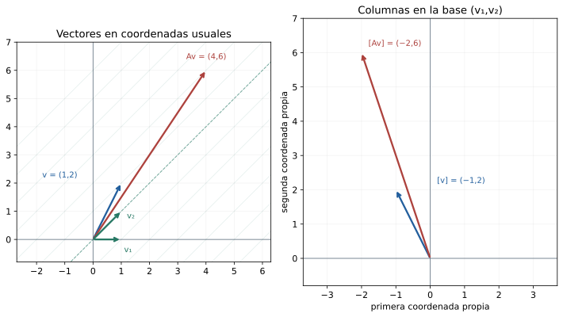
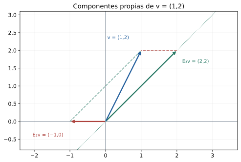
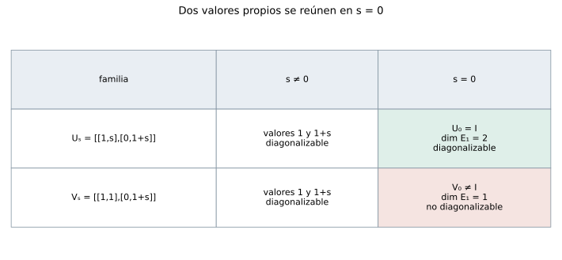
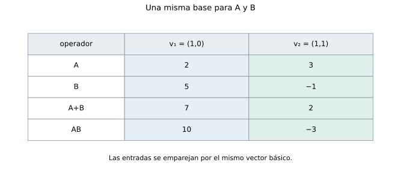

Capítulo 16. Diagonalización
Álgebra para matemáticos · Tomo II
← Capítulo 15 · Índice del tomo II · Obra completa · Capítulo 17 →
La matriz \(A=\begin{pmatrix}2&1\\0&3\end{pmatrix}\) envía \((x,y)\) a \((2x+y,3y)\). En las coordenadas usuales, la segunda componente interviene en las dos salidas. Sin embargo, \(A(1,0)=2(1,0)\) y \(A(1,1)=3(1,1)\), de modo que una entrada escrita como \(a(1,0)+b(1,1)\) se transforma en \(2a(1,0)+3b(1,1)\). En esa base la mezcla de coordenadas desaparece. Las dos direcciones no forman un ángulo recto, y esa circunstancia no impide usarlas como ejes de coordenadas.
C14 permitió encontrar direcciones propias y comparar sus dimensiones; C15 mostró que las potencias de un operador obedecen relaciones polinómicas. Esas dos descripciones se encuentran en el problema de diagonalizar: decidir si hay suficientes direcciones propias para representar todas las entradas y, cuando las hay, construir una base con ellas. Una raíz repetida en el característico puede corresponder a un espacio propio amplio, como sucede con \(3I\), o a una sola recta, como sucede con \(\begin{pmatrix}3&1\\0&3\end{pmatrix}\). La repetición por sí sola deja abierta la pregunta.

Trabajaremos en un espacio \(V\) de dimensión finita sobre un cuerpo conmutativo \(\mathbb F\). Todos los valores propios y factores lineales que aparezcan en un criterio se entienden en ese cuerpo. Usamos la semejanza de C12, la independencia de espacios propios y las multiplicidades de C14, y la evaluación y el mínimo de C15. El espacio cero se considera diagonalizable mediante su base vacía; los argumentos que requieren elegir un valor propio se formularán en dimensión positiva.
16.1. Una base en la que cada vector se transforma por separado
Definición 16.1. Un operador \(T\) es diagonalizable sobre \(\mathbb F\) si existe una base de \(V\) en la que su matriz es diagonal. Una matriz \(A\in M_n(\mathbb F)\) es diagonalizable sobre \(\mathbb F\) si existen \(P\) invertible y \(D\) diagonal, ambas sobre \(\mathbb F\), tales que \(P^{-1}AP=D\).
Las columnas de una matriz de representación son las coordenadas de las imágenes de los vectores de la base. Pedir que la columna \(j\) sólo tenga una entrada en la posición \(j\) equivale, por tanto, a pedir que esa imagen sea un múltiplo del vector básico correspondiente. Esta observación traduce la definición en una condición que podemos construir resolviendo núcleos.
Teorema 16.1 (criterio de base propia). Sean \(\lambda_1,\ldots,\lambda_r\) todos los valores propios distintos de \(T\) en \(\mathbb F\). Son equivalentes: \(T\) es diagonalizable; \(V\) tiene una base de vectores propios; \(V=\bigoplus_{i=1}^r E_{\lambda_i}(T)\); y \(\sum_{i=1}^r\dim E_{\lambda_i}(T)=\dim V\).
Para una matriz, si las columnas de \(P\) son una base propia \(v_1,\ldots,v_n\), en ese orden, entonces
\[ AP=PD,\qquad D=\operatorname{diag}(\mu_1,\ldots,\mu_n), \]
donde \(Av_j=\mu_jv_j\); los \(\mu_j\) pueden repetirse.
Demostración. Una matriz diagonal en la base \(v_1,\ldots,v_n\) significa \(Tv_j=\mu_jv_j\) para cada \(j\). Esto prueba la equivalencia entre diagonalización y base propia, y da la identidad matricial columna a columna. Si la base es propia, cada entrada se escribe como suma de componentes en los espacios propios; su suma es directa por C14, teorema 14.4. Una suma directa igual a \(V\) tiene dimensión igual a la suma de las dimensiones de sus sumandos, por C11. Recíprocamente, si esa suma de dimensiones es \(n\), concatenar bases de los espacios propios produce una lista independiente por 14.4, con \(n\) elementos; es una base de \(V\). En dimensión cero, la lista y la suma son vacías y cumplen todas las condiciones. \(\square\)
Para la matriz inicial, las columnas \(v_1=(1,0)\) y \(v_2=(1,1)\) dan
\[ P=\begin{pmatrix}1&1\\0&1\end{pmatrix},\qquad P^{-1}=\begin{pmatrix}1&-1\\0&1\end{pmatrix},\qquad P^{-1}AP=\begin{pmatrix}2&0\\0&3\end{pmatrix}. \]
Al usar \(A=PDP^{-1}\) sobre una entrada, \(P^{-1}\) obtiene sus coordenadas propias, \(D\) multiplica cada una por el valor correspondiente y \(P\) reconstruye la salida en las coordenadas usuales. Si se permutan las columnas de \(P\), deben permutarse en el mismo orden las entradas de \(D\). Cambiar arbitrariamente una de las dos listas destruye \(AP=PD\).
Escoger un vector por valor propio sólo alcanza cuando todos los espacios propios son rectas y hay tantos valores distintos como dimensiones. Para \(A=\operatorname{diag}(2,2,3)\) hacen falta dos vectores independientes de \(E_2\) y uno de \(E_3\). La cantidad pertinente es la suma de sus dimensiones, no el número de valores propios ni el número total de vectores que podemos escribir dentro de ellos.
16.2. Contar las direcciones que faltan
El característico ofrece un primer control: si una matriz es semejante a \(\operatorname{diag}(\mu_1,\ldots,\mu_n)\), entonces su característico es \(\prod_j(t-\mu_j)\). Debe escindirse sobre \(\mathbb F\), es decir, descomponerse completamente en factores lineales con raíces en ese cuerpo. Incluso cuando se escinde, aún hay que decidir cuántos vectores independientes aporta cada raíz.
Teorema 16.2 (criterio de multiplicidades). Un operador es diagonalizable sobre \(\mathbb F\) si y sólo si su característico se escinde sobre \(\mathbb F\) y, para cada valor propio, su multiplicidad geométrica es igual a su multiplicidad algebraica.
Demostración. Si hay una base propia, el característico se escinde como acabamos de ver. En una representación diagonal, el espacio propio de \(\lambda\) está formado por las columnas cuyas coordenadas sólo pueden ser no nulas en posiciones con entrada diagonal \(\lambda\). Su dimensión es el número de esas posiciones, que también es la multiplicidad de \(\lambda\) en el característico. Semejanza conserva ambas multiplicidades por C14.
Recíprocamente, si \(\chi_T=\prod_i(t-\lambda_i)^{a_i}\) y cada \(g_i=\dim E_{\lambda_i}\) vale \(a_i\), entonces \(\sum_i g_i=\sum_i a_i=n\). El teorema 16.1 da una base propia. En dimensión cero, el producto es uno y todas las condiciones son vacías. \(\square\)
El criterio deja una cuenta concreta: para cada raíz repetida se calcula \(g_i=n-\operatorname{rg}(A-\lambda_iI)\); las raíces simples ya tienen dimensión propia uno por C14. Si el característico se escinde, el entero \(n-\sum_i g_i\) mide cuántos vectores independientes faltan para completar una base propia. No se recuperan escogiendo más múltiplos de los generadores existentes.
Por ejemplo, las matrices
\[ C=\begin{pmatrix}2&0&1\\0&2&1\\0&0&3\end{pmatrix},\qquad B=\begin{pmatrix}2&1&0\\0&2&0\\0&0&3\end{pmatrix} \]
tienen característico \((t-2)^2(t-3)\). Para \(C\), el espacio de dos es \(\operatorname{span}(e_1,e_2)\) y el de tres es \(\operatorname{span}(1,1,1)\). Esos tres generadores forman una base y las multiplicidades coinciden. Para \(B\), los espacios son \(\operatorname{span}e_1\) y \(\operatorname{span}e_3\); suman sólo dos dimensiones. La entrada superior de la matriz puede tener efectos distintos: en \(C\) mezcla componentes asociadas a valores diferentes, mientras que en \(B\) actúa dentro de la parte de raíz repetida.
Sobre \(\mathbb R\), la rotación \(R=\begin{pmatrix}0&-1\\1&0\end{pmatrix}\) falla ya en la escisión de \(t^2+1\). Sobre \(\mathbb C\), tiene dos raíces distintas, \(i\) y \(-i\), y los vectores \((1,-i)\) y \((1,i)\) forman una base propia. El operador definido por las mismas entradas se diagonaliza en el segundo cuerpo. En cambio, una matriz real con \(\chi=(t-3)^2\) y espacio propio de dimensión uno seguirá teniendo ese defecto al considerarla compleja: resolver el mismo sistema no crea una segunda dirección independiente.
16.3. Lo que debe decir el polinomio mínimo
En una base propia, evaluar \(p(T)\) equivale a evaluar \(p\) sobre cada entrada diagonal. Para anular el operador hay que anular cada valor propio; una sola aparición de cada factor basta, aunque ese valor ocupe muchas posiciones. Por eso \(m_{3I}=t-3\) aun en un espacio de dimensión grande. La condición sobre el mínimo tendrá dos partes: que sus factores sean lineales en el cuerpo y que ninguno se repita.
Teorema 16.3 (criterio del mínimo). En dimensión finita positiva, \(T\) es diagonalizable sobre \(\mathbb F\) si y sólo si
\[ m_T(t)=\prod_{i=1}^r(t-\lambda_i) \]
para escalares \(\lambda_i\in\mathbb F\) distintos. Equivalentemente, basta que exista un polinomio anulador que sea producto de factores lineales distintos. En dimensión cero se incluye el producto vacío uno.
Demostración. Si hay una base propia y \(\lambda_1,\ldots,\lambda_r\) son sus valores distintos, \(q(t)=\prod_i(t-\lambda_i)\) anula cada vector de la base por C15, proposición 15.2, y por tanto anula a \(T\). Así, \(m_T\mid q\). Cada \(\lambda_i\) debe ser raíz del mínimo por 15.4; al ser distintas, el producto \(q\) divide a \(m_T\). Como son mónicos, ambos polinomios coinciden.
Para la recíproca, supongamos que \(q(t)=\prod_i(t-\lambda_i)\), con factores distintos, anula a \(T\). Para cada \(i\) definimos
\[ \ell_i(t)=\prod_{j\ne i}\frac{t-\lambda_j}{\lambda_i-\lambda_j}. \]
Los denominadores son no nulos. Estos polinomios satisfacen \(\ell_i(\lambda_j)=1\) si \(i=j\), y cero en otro caso. El polinomio \(\sum_i\ell_i-1\) tiene grado menor que \(r\) y se anula en los \(r\) escalares distintos; el teorema de la cota de raíces del tomo I obliga a que sea cero. Por otro lado, \((t-\lambda_i)\ell_i\) es un múltiplo escalar de \(q\). Evaluar ambas identidades da
\[ \sum_i\ell_i(T)=I,\qquad (T-\lambda_iI)\ell_i(T)=0. \]
Para cada \(v\), la primera igualdad escribe \(v=\sum_i\ell_i(T)v\) y la segunda sitúa cada sumando en \(E_{\lambda_i}\). Los espacios propios generan \(V\) y su suma es directa por C14, omitiendo los sumandos cero si algún \(\lambda_i\) no es valor propio. Concatenar sus bases produce una base propia por 16.1. Esto prueba a la vez la suficiencia del mínimo indicado y la del anulador más general. Cuando \(r=1\), el producto que define \(\ell_1\) es vacío e igual a uno, y el mismo argumento da \(T=\lambda_1I\). \(\square\)
La demostración sólo usa evaluación, raíces de polinomios y la independencia ya probada. No necesita una descomposición de factores con potencias, ni exige el teorema fundamental del álgebra: la escisión es una hipótesis que se comprueba en el cuerpo de trabajo. Sobre los complejos, que el característico se escinda está garantizado por el TFA admitido de T1 §26.15, pero las raíces repetidas del mínimo pueden seguir impidiendo la diagonalización.
Los dos obstáculos no deben confundirse. La rotación real tiene mínimo \(t^2+1\), sin factores irreducibles repetidos sobre \(\mathbb R\), pero carece de factores lineales reales. La matriz \(\begin{pmatrix}3&1\\0&3\end{pmatrix}\) tiene mínimo \((t-3)^2\): se escinde y repite un factor. Decir solamente que «el mínimo no tiene repeticiones» deja sin controlar el primero de esos casos.
Un anulador puede repetir factores aunque el operador sea diagonalizable: \(\chi_{3I_2}=(t-3)^2\) es un ejemplo. El criterio pide que el mínimo tenga factores lineales simples, o que encontremos algún anulador con esa propiedad. Si el anulador conocido los repite, todavía puede existir uno menor que permita decidir favorablemente.
16.4. Recuperar cada componente sin escoger sus coordenadas
En la prueba anterior, \(\ell_i(T)v\) es la componente de \(v\) en el espacio propio de \(\lambda_i\). Cuando conocemos la descomposición directa, esa componente está determinada por el vector y el espacio, aunque cambiemos la base elegida dentro de cada sumando. La interpolación entrega así operadores que recuperan componentes sin resolver de nuevo un sistema para cada entrada.
Definición 16.2. Un proyector es un operador \(E\) que satisface \(E^2=E\). Para un operador diagonalizable, llamaremos proyector sobre \(E_{\lambda_i}\) según la descomposición propia al que conserva la componente de ese sumando y anula todas las demás. No se presupone que sea una proyección ortogonal.
Proposición 16.4 (proyectores propios). Si \(T\) es diagonalizable y \(\lambda_1,\ldots,\lambda_r\) son sus valores distintos, los operadores
\[ E_i=\ell_i(T)=\prod_{j\ne i}\frac{T-\lambda_jI}{\lambda_i-\lambda_j} \]
son los proyectores de su descomposición propia. Satisfacen \(\operatorname{im}E_i=E_{\lambda_i}\), \(\ker E_i=\bigoplus_{j\ne i}E_{\lambda_j}\) y
\[ E_i^2=E_i,\qquad E_iE_j=0\ (i\ne j),\qquad \sum_iE_i=I,\qquad T=\sum_i\lambda_iE_i. \]
Estos operadores quedan determinados de manera única por conservar su componente y anular las otras.
Demostración. Para \(w\in E_{\lambda_j}\), la evaluación sobre un vector propio da \(E_iw=\ell_i(\lambda_j)w\): es \(w\) si \(i=j\) y cero en otro caso. Cada vector de \(V\) tiene una descomposición única \(v=\sum_jv_j\) con \(v_j\in E_{\lambda_j}\); por linealidad, \(E_iv=v_i\). De esa descripción proceden la imagen, el núcleo, la idempotencia y los productos cero. Sumar las componentes recupera \(v\), y sumar \(\lambda_iv_i\) recupera \(Tv\), lo que prueba las dos últimas identidades. Cualquier otro operador con la acción prescrita coincide sobre cada sumando y, por tanto, sobre todo \(V\). \(\square\)
Para \(A=\begin{pmatrix}2&1\\0&3\end{pmatrix}\),
\[ E_2=3I-A=\begin{pmatrix}1&-1\\0&0\end{pmatrix},\qquad E_3=A-2I=\begin{pmatrix}0&1\\0&1\end{pmatrix}. \]
Una entrada \((x,y)\) se descompone como \((x-y,0)+(y,y)\). En particular, \((1,2)=(-1,0)+(2,2)\); multiplicar esas dos componentes por dos y tres da \((4,6)\), como en la apertura. El proyector \(E_2\) envía el vector \((1,1)\) a cero porque lo quita a lo largo de la otra dirección propia. No coincide con la proyección perpendicular sobre el eje horizontal, que enviaría ese vector a \((1,0)\).

Proposición 16.5 (evaluar por componentes). Para \(T\) diagonalizable y cualquier \(p\in\mathbb F[t]\),
\[ p(T)=\sum_i p(\lambda_i)E_i. \]
En particular, \(p(T)\) es diagonalizable en la misma base. Su espacio propio asociado a un escalar \(\mu\) es
\[ E_\mu(p(T))=\bigoplus_{\{i:p(\lambda_i)=\mu\}}E_{\lambda_i}(T). \]
Si \(V\ne\{0\}\), su mínimo es el producto de los factores \(t-\mu\) para los valores distintos de la lista \(p(\lambda_i)\). Si ninguno de esos valores es cero, \(p(T)^{-1}=\sum_i p(\lambda_i)^{-1}E_i\).
Demostración. Sobre una componente \(v_i\), \(p(T)\) actúa multiplicando por \(p(\lambda_i)\), según C15. Aplicar esa acción a \(v=\sum_iv_i\) prueba la primera fórmula y que la misma base sigue siendo propia. La ecuación \(p(T)v=\mu v\) se convierte en \(\sum_i(p(\lambda_i)-\mu)v_i=0\); la directitud obliga a que cada término sea cero. Sólo pueden persistir componentes con el valor indicado, y cualquiera de sus sumas satisface la ecuación. El criterio del mínimo de 16.3 da la afirmación siguiente, contando cada valor una sola vez. Cuando todos son no nulos, la fórmula propuesta para la inversa multiplica cada componente por el recíproco, y ambos productos son la identidad. \(\square\)
Por ejemplo, para \(T=\operatorname{diag}(2,-2,3)\) y \(p=t^2\), los dos primeros espacios propios se reúnen en el espacio propio de cuatro de \(T^2\); el tercero queda asociado a nueve. La transformación evaluada conserva una base propia, pero puede perder la capacidad de distinguir las componentes originales. En dimensión positiva, \(m_{T^2}=(t-4)(t-9)\) sobre \(\mathbb R\), mientras \(m_T=(t-2)(t+2)(t-3)\).
16.5. Relaciones sencillas que fuerzan una base propia
La igualdad \(E^2=E\) ya dice que \(t(t-1)\) anula a un proyector. Cero y uno son distintos en cualquier cuerpo, así que 16.3 garantiza su diagonalización. También podemos construir su base sin polinomios de interpolación, a partir de una descomposición que explica su nombre.
Proposición 16.6 (descomposición de un proyector). Si \(E^2=E\), entonces \(V=\operatorname{im}E\oplus\ker E\). El operador es la identidad en su imagen y cero en su núcleo; por consiguiente, es diagonalizable. Recíprocamente, un operador diagonalizable cuyos valores propios pertenecen a \(\{0,1\}\) es un proyector.
Demostración. Para cualquier \(v\), escribimos \(v=Ev+(v-Ev)\). El primer término pertenece a la imagen y \(E(v-Ev)=Ev-E^2v=0\) sitúa el segundo en el núcleo. Si \(w=Eu\) está en ambos subespacios, entonces \(Ew=E^2u=Eu=w\) y también \(Ew=0\), de modo que \(w=0\). La suma es directa. Una base de la imagen, seguida de una del núcleo, produce la diagonal con unos y ceros. Para la recíproca, en una base propia cada entrada diagonal satisface \(a^2=a\), y por tanto toda la matriz satisface \(E^2=E\). \(\square\)
Si \(T^2=I\) y la característica del cuerpo es distinta de dos, el anulador \((t-1)(t+1)\) tiene factores lineales distintos. El operador se diagonaliza con valores entre uno y menos uno, y sus proyectores son \((I+T)/2\) y \((I-T)/2\). En característica dos los dos factores se reúnen. La matriz \(U=\begin{pmatrix}1&1\\0&1\end{pmatrix}\) sobre \(\mathbb F_2\) cumple \(U^2=I\), pero tiene mínimo \((t-1)^2\) y no es diagonalizable. La hipótesis sobre la característica controla la separación de los factores.
Una repetición del característico, en cambio, puede ser compatible con todas las bases necesarias. Compare la familia \(U_s=\begin{pmatrix}1&s\\0&1+s\end{pmatrix}\) sobre \(\mathbb R\). Los vectores \((1,0)\) y \((1,1)\) constituyen una base propia para todo \(s\): sus valores son uno y \(1+s\), que coinciden cuando \(s=0\), justo cuando \(U_0=I\). La familia \(V_s=\begin{pmatrix}1&1\\0&1+s\end{pmatrix}\) se diagonaliza para \(s\ne0\), con vectores \((1,0)\) y \((1,s)\); en \(s=0\) pierde esa posibilidad y su espacio propio se reduce a una recta.

16.6. Escoger una base que sirva para dos operadores
Dos matrices pueden ser diagonalizables por separado sin admitir una misma base propia. Si logramos representarlas diagonalmente en la misma base, sus productos conmutan, porque las matrices diagonales multiplican las entradas posición a posición. La conmutación resulta así necesaria. Para probar que también es suficiente bajo la diagonalizabilidad individual, necesitamos saber cómo se comporta una base propia dentro de un subespacio que el operador preserva.
Lema 16.7 (componentes de un subespacio preservado). Sea \(T\) diagonalizable y sea \(W\subseteq V\) un subespacio tal que \(T(W)\subseteq W\). Entonces
\[ W=\bigoplus_i\bigl(W\cap E_{\lambda_i}(T)\bigr). \]
En particular, \(W\) tiene una base formada por vectores propios de \(T\).
Demostración. Si \(T\) preserva \(W\), cada potencia lo preserva, incluida la identidad, y también cualquier combinación de ellas. Los proyectores \(E_i=\ell_i(T)\) llevan por tanto \(W\) dentro de sí mismo. Para \(w\in W\), su descomposición \(w=\sum_iE_iw\) tiene cada componente tanto en \(W\) como en \(E_{\lambda_i}\). La suma cubre \(W\) y es directa porque lo era la suma de los espacios propios de \(V\). Concatenar bases de las intersecciones no nulas da la base pedida. \(\square\)
El lema no afirma que los vectores de una base propia escogida de antemano que casualmente pertenezcan a \(W\) ya generen \(W\). Para \(T=I\) en \(\mathbb R^2\) y \(W=\operatorname{span}(1,1)\), el subespacio se preserva y tiene base propia, pero ninguno de los dos vectores de la base usual está en él. Podemos cambiar de base dentro de un espacio propio cuando su dimensión es mayor que uno.
Definición 16.3. Dos o más operadores sobre \(V\) son simultáneamente diagonalizables sobre \(\mathbb F\) si existe una misma base de \(V\) en la que todas sus matrices son diagonales.
Teorema 16.8 (dos operadores). Dos operadores diagonalizables sobre \(\mathbb F\) son simultáneamente diagonalizables sobre \(\mathbb F\) si y sólo si conmutan.
Demostración. La necesidad procede del producto de matrices diagonales y la representación de composiciones de C12. Para la suficiencia, sean \(S,T\) diagonalizables y \(ST=TS\). Si \(w\in E_\lambda(S)\), entonces \(S(Tw)=T(Sw)=\lambda Tw\), por lo que \(T\) preserva ese espacio propio. Aplicamos el lema 16.7 a \(T\) y a \(W=E_\lambda(S)\): se obtiene una base de \(W\) formada por vectores propios de \(T\). Todos ellos ya son propios de \(S\), con valor \(\lambda\). Como \(S\) es diagonalizable, sus espacios propios suman directamente todo \(V\); concatenar las bases comunes de esos sumandos produce una base común de \(V\). \(\square\)
Las dos hipótesis son necesarias. La identidad conmuta con una matriz que no sea diagonalizable y no le aporta una base propia. Por otra parte, \(\operatorname{diag}(1,2)\) y \(\begin{pmatrix}1&1\\0&2\end{pmatrix}\) son ambas diagonalizables sobre \(\mathbb R\), pero sus productos difieren en la entrada superior derecha; no hay una base que diagonalice las dos.
Para la matriz inicial \(A=\begin{pmatrix}2&1\\0&3\end{pmatrix}\), tomemos además \(B=\begin{pmatrix}5&-6\\0&-1\end{pmatrix}\). Los vectores \((1,0)\) y \((1,1)\) son comunes: \(B\) los multiplica por cinco y menos uno. Con el mismo \(P\) de §16.1, las diagonales son \((2,3)\) para \(A\) y \((5,-1)\) para \(B\). La suma tiene diagonal \((7,2)\) y el producto \((10,-3)\) en esa base. No necesitamos volver a buscar sus vectores propios.

Corolario 16.9 (familia finita). Una familia finita de operadores, cada uno diagonalizable sobre \(\mathbb F\), es simultáneamente diagonalizable si y sólo si sus miembros conmutan por parejas.
Demostración. La necesidad es la misma que para dos operadores. Para la suficiencia, se empieza con la descomposición propia del primer operador y se procede por inducción sobre el número de operadores. Supongamos que los primeros \(k\) han descompuesto \(V\) en suma directa de sus espacios propios conjuntos, formados por vectores que satisfacen simultáneamente \(T_jv=\lambda_jv\) para \(1\le j\le k\). El operador \(T_{k+1}\) preserva cada uno: al conmutar con todos los anteriores, conserva cada ecuación. El lema 16.7 descompone ese subespacio en intersecciones con los espacios propios de \(T_{k+1}\) y proporciona bases propias allí. Estas nuevas intersecciones siguen siendo suma directa y cubren el sumando previo; juntarlas para todos los sumandos produce la descomposición del paso siguiente. Al terminar, sus bases son comunes a la familia entera. La familia vacía admite cualquier base. \(\square\)
Proposición 16.10 (conmutación con valores simples). Si \(T\) tiene \(n\) valores propios distintos en un espacio de dimensión \(n\ge1\), todo operador \(S\) que conmuta con \(T\) es un polinomio de \(T\); puede representarse de manera única por uno de grado menor que \(n\).
Demostración. Cada espacio propio de \(T\) es una recta y esas rectas forman una descomposición de \(V\) por C14. La conmutación obliga a \(S\) a preservar cada una. En su generador \(v_i\), por tanto, \(Sv_i=\mu_iv_i\) para algún \(\mu_i\in\mathbb F\). El polinomio \(p(t)=\sum_i\mu_i\ell_i(t)\) tiene grado menor que \(n\) y valores \(p(\lambda_i)=\mu_i\). Así, \(p(T)\) y \(S\) coinciden sobre la base propia y son iguales. Si dos polinomios de grado menor que \(n\) representaran a \(S\), su diferencia se anularía en los \(n\) valores distintos y sería cero. \(\square\)
Para el par \(A,B\) recién calculado, la interpolación da \(p(t)=17-6t\), pues \(p(2)=5\) y \(p(3)=-1\). La igualdad \(B=17I-6A\) explica su conmutación y reconstruye la segunda transformación desde la primera. Si un espacio propio de \(T\) tiene dimensión mayor que uno, un operador que conmuta con \(T\) puede actuar allí de manera no escalar; los polinomios de \(T\), en cambio, actúan siempre como un escalar sobre esa componente. La posibilidad de recuperar todo operador conmutante mediante interpolación dependía de que cada componente fuera una recta.
16.7. Ejercicios
Los datos numéricos se interpretan sobre \(\mathbb R\) salvo indicación contraria. Los operadores generales actúan en dimensión finita sobre el cuerpo declarado. Toda diagonalización matricial debe indicar el orden de la base y verificar \(AP=PD\); no es suficiente presentar una lista de valores y otra de vectores sin su correspondencia.
Ejercicio 1 — La base propia de una triangular. Diagonaliza \(A=\begin{pmatrix}2&1\\0&3\end{pmatrix}\) indicando \(P\), \(D\) y \(P^{-1}\). Comprueba \(AP=PD\).
Ejercicio 2 — Una raíz repetida que permite diagonalizar. Diagonaliza \(C=\begin{pmatrix}2&0&1\\0&2&1\\0&0&3\end{pmatrix}\). Determina las dos multiplicidades de cada valor propio.
Ejercicio 3 — Una raíz repetida que lo impide. Decide si \(B=\begin{pmatrix}2&1&0\\0&2&0\\0&0&3\end{pmatrix}\) es diagonalizable. Determina cuántas dimensiones propias faltan.
Ejercicio 4 — Todos los vectores de un espacio propio. Para \(T=cI\) en dimensión \(n\ge1\), describe todas sus bases propias, el mínimo y el característico. ¿Necesita tener \(n\) valores propios distintos?
Ejercicio 5 — Una diagonalización compleja. Estudia \(R=\begin{pmatrix}0&-1\\1&0\end{pmatrix}\) sobre \(\mathbb R\) y \(\mathbb C\). En el segundo cuerpo exhibe la matriz de cambio de base.
Ejercicio 6 — Racionales y reales. Para \(A=\begin{pmatrix}0&2\\1&0\end{pmatrix}\), decide la diagonalizabilidad sobre \(\mathbb Q\) y sobre \(\mathbb R\), y construye una base cuando exista.
Ejercicio 7 — Potencias nulas y diagonalización. Si \(N^k=0\) para algún \(k\ge1\), demuestra que \(N\) es diagonalizable si y sólo si \(N=0\).
Ejercicio 8 — Trasponer una diagonalización. Demuestra que \(A\) es diagonalizable si y sólo si \(A^{\mathsf T}\) lo es. Si \(A=PDP^{-1}\), indica un cambio de base para la transpuesta.
Ejercicio 9 — El orden de las columnas. En el ejercicio 1, intercambia las dos columnas de \(P\). ¿Cuál debe ser la nueva diagonal? ¿Puedes multiplicar una columna por un escalar no nulo sin cambiarla?
Ejercicio 10 — Potencias por componentes. Para la matriz del ejercicio 1, encuentra \(A^k\) para \(k\ge0\) y escribe \(A^{10}\).
Ejercicio 11 — Una condición suficiente demasiado fuerte. Refuta la afirmación «una matriz de orden tres sólo puede ser diagonalizable si tiene tres valores propios distintos». Sustitúyela por una condición necesaria y suficiente.
Ejercicio 12 — Escisión sin base propia. Da una matriz real cuyo característico se escinda pero que no sea diagonalizable. Compara su mínimo con el característico.
Ejercicio 13 — Un mínimo sin factores repetidos. Explica por qué la condición «el mínimo no repite factores irreducibles» no garantiza diagonalizabilidad sobre el cuerpo de trabajo.
Ejercicio 14 — Decidir desde un mínimo conocido. Un operador real tiene mínimo \((t-2)^2(t-5)\). ¿Es diagonalizable? ¿Cambiar a los complejos puede resolver el defecto?
Ejercicio 15 — Contar dimensiones, no vectores. Una matriz real de orden cinco tiene característico \((t-1)^3(t+2)^2\). Se calculan dos vectores propios independientes para uno y dos para menos dos. ¿Basta para decidir? ¿Qué comprobación falta?
Ejercicio 16 — Equivalencia por filas no es semejanza. La matriz \(J=\begin{pmatrix}1&1\\0&1\end{pmatrix}\) se reduce por filas a \(I\). ¿Prueba eso que es diagonalizable?
Ejercicio 17 — Calcular dos proyectores propios. Para \(A\) del ejercicio 1, calcula los proyectores propios mediante interpolación y descompón \(v=(1,2)\). Verifica la reconstrucción de \(Av\).
Ejercicio 18 — La dirección de una proyección. Para \(E_2(x,y)=(x-y,0)\), determina imagen, núcleo y la dirección a lo largo de la cual se proyecta. ¿Es la proyección perpendicular sobre el eje horizontal?
Ejercicio 19 — El proyector complementario. Si \(E^2=E\), prueba que \(I-E\) es un proyector, que \(E(I-E)=(I-E)E=0\) y que su imagen y núcleo intercambian los de \(E\).
Ejercicio 20 — Construir a partir de componentes. Sean \(E_1,\ldots,E_r\) proyectores con \(\sum_iE_i=I\) y \(E_iE_j=0\) para \(i\ne j\). Para escalares \(c_i\), prueba que \(T=\sum_i c_iE_i\) es diagonalizable. ¿Qué ocurre si algunos \(c_i\) coinciden?
Ejercicio 21 — Diagonalizar un proyector oblicuo. Diagonaliza \(E=\begin{pmatrix}1&2\\0&0\end{pmatrix}\) e indica su imagen y núcleo.
Ejercicio 22 — La misma involución en dos cuerpos. Para \(S=\begin{pmatrix}0&1\\1&0\end{pmatrix}\), estudia la diagonalización sobre \(\mathbb R\) y \(\mathbb F_2\).
Ejercicio 23 — Una relación cúbica. Supón \(T^3=T\). Demuestra que \(T\) es diagonalizable cuando la característica no es dos. Da un contraejemplo en característica dos y aclara el caso de característica tres.
Ejercicio 24 — Contar en un cuerpo pequeño. En \(\mathbb F_3\), demuestra que \(T\) es diagonalizable si y sólo si \(T^3=T\). Cuenta las matrices de orden dos con esa propiedad.
Ejercicio 25 — Valores que se reúnen al evaluar. Para \(T=\operatorname{diag}(2,-2,3)\) sobre \(\mathbb R\), determina los espacios propios y el mínimo de \(T^2\). Repite para la matriz con esas entradas reducidas a \(\mathbb F_5\).
Ejercicio 26 — Recuperar un operador desde una evaluación. Supón que \(T\) es diagonalizable y que \(p\) toma valores distintos sobre los valores propios distintos de \(T\). Demuestra que existe \(q\) con \(T=q(p(T))\). ¿Qué falla si \(p\) reúne dos valores?
Ejercicio 27 — Cuando diagonalizar el cuadrado sí basta. Sea \(T\) un operador complejo invertible y supón que \(T^2\) es diagonalizable. Demuestra que \(T\) es diagonalizable. ¿Vale el resultado sin invertibilidad o sobre \(\mathbb R\)?
Ejercicio 28 — Descomponer un subespacio preservado. Para \(T=\operatorname{diag}(1,1,2)\) y \(W=\operatorname{span}((1,1,0),(0,0,1))\), comprueba que \(T\) preserva \(W\) y encuentra la descomposición del lema 16.7.
Ejercicio 29 — Una base heredada que no sirve. Refuta la afirmación «si \(T\) es diagonalizable y preserva \(W\), los vectores de cualquier base propia de \(V\) que estén en \(W\) forman una base de \(W\)».
Ejercicio 30 — Una base común explícita. Para \(A=\begin{pmatrix}2&1\\0&3\end{pmatrix}\) y \(B=\begin{pmatrix}5&-6\\0&-1\end{pmatrix}\), construye una base común y calcula las matrices de \(A+B\) y \(AB\) en ella.
Ejercicio 31 — Diagonalizables que no conmutan. Para \(S=\operatorname{diag}(1,2)\) y \(T=\begin{pmatrix}1&1\\0&2\end{pmatrix}\), prueba que ambos son diagonalizables y que no admiten una base propia común.
Ejercicio 32 — Conmutación sin diagonalizabilidad individual. Da dos operadores conmutantes que no sean simultáneamente diagonalizables. Identifica la hipótesis que falta en 16.8.
Ejercicio 33 — Cambiar de base dentro de una componente repetida. Sean \(S=\operatorname{diag}(2,2,3)\) y \(T=\begin{pmatrix}1&1&0\\0&4&0\\0&0&5\end{pmatrix}\). Comprueba que conmutan y construye una base propia común.
Ejercicio 34 — Resolver la conmutación en un caso simple. Para \(A=\begin{pmatrix}2&1\\0&3\end{pmatrix}\), determina todas las matrices \(S=\begin{pmatrix}a&b\\c&d\end{pmatrix}\) que conmutan con \(A\) y exprésalas como polinomios de \(A\).
Ejercicio 35 — El efecto de una multiplicidad. Construye \(T\) diagonalizable y \(S\) que conmute con \(T\) pero no sea un polinomio de \(T\). Procura que \(T\) tenga más de un valor propio.
Ejercicio 36 — Dimensión de los operadores conmutantes. Si \(T\) es diagonalizable y sus espacios propios tienen dimensiones \(g_1,\ldots,g_r\), demuestra que el espacio de operadores que conmutan con \(T\) tiene dimensión \(\sum_i g_i^2\). Compáralo con \(\mathbb F[T]\).
Ejercicio 37 — Conmutar con uno no es conmutar por parejas. Da tres operadores diagonalizables \(S,T,U\) tales que \(S\) conmute con los otros dos, pero los tres no admitan una base común.
Ejercicio 38 — Volver de los complejos a los reales. Para una matriz real \(A\), demuestra que es diagonalizable sobre \(\mathbb R\) si y sólo si es diagonalizable sobre \(\mathbb C\) y todos sus valores propios complejos son reales.
Ejercicio 39 — Sumas y productos sin conmutación. Construye dos proyectores reales \(E,F\) tales que ni \(E+F\) ni \(EF\) sean diagonalizables. Explica por qué no contradicen la diagonalización simultánea.
Ejercicio 40 — Dos parámetros y una base que deja de existir. Para \(A_{a,b}=\begin{pmatrix}a&1&0\\0&b&0\\0&0&a\end{pmatrix}\) sobre \(\mathbb R\), determina exactamente cuándo es diagonalizable y construye una base en esos casos. Encuentra el mínimo y una fórmula para \(A_{a,b}^k\) con \(k\ge1\), incluyendo \(a=b\).
16.8. Soluciones
Solución 1. Los espacios propios son \(E_2=\operatorname{span}(1,0)\) y \(E_3=\operatorname{span}(1,1)\). Tomamos \(P=\begin{pmatrix}1&1\\0&1\end{pmatrix}\), \(D=\operatorname{diag}(2,3)\) y \(P^{-1}=\begin{pmatrix}1&-1\\0&1\end{pmatrix}\). Ambos productos \(AP\) y \(PD\) son \(\begin{pmatrix}2&3\\0&3\end{pmatrix}\). El determinante de \(P\) es uno, por lo que las columnas son una base; la igualdad verificada implica \(P^{-1}AP=D\).
Solución 2. El característico es \((t-2)^2(t-3)\). Para dos, el sistema impone \(z=0\) y deja libres \(x,y\), así que \(E_2=\operatorname{span}(e_1,e_2)\), con multiplicidades algebraica y geométrica dos. Para tres, las ecuaciones son \(-x+z=0\), \(-y+z=0\), y \(E_3=\operatorname{span}(1,1,1)\) tiene ambas multiplicidades uno. Con esas columnas en ese orden, \(P=\begin{pmatrix}1&0&1\\0&1&1\\0&0&1\end{pmatrix}\) es invertible y \(CP=P\operatorname{diag}(2,2,3)\), pues cada columna cumple la ecuación propia correspondiente.
Solución 3. El característico es \((t-2)^2(t-3)\). Para dos, \((B-2I)(x,y,z)=(y,0,z)\), de modo que \(E_2=\operatorname{span}e_1\) tiene dimensión uno. Para tres, se obtiene \(y=x=0\) y \(E_3=\operatorname{span}e_3\). La suma de dimensiones es dos en un espacio de dimensión tres; falta una dimensión propia y no hay base propia. Añadir múltiplos de \(e_1\) no aumenta esa dimensión.
Solución 4. Todo vector no nulo satisface \(Tv=cv\), por lo que cualquier base es propia y su matriz ya es \(cI\). El mínimo es \(t-c\), mientras el característico es \((t-c)^n\). Sólo tiene el valor propio \(c\), aunque sea diagonalizable para cualquier \(n\). La condición de tener \(n\) valores distintos es suficiente y no necesaria.
Solución 5. Sobre \(\mathbb R\), \(t^2+1\) no se escinde y no hay diagonalización real. Sobre \(\mathbb C\), \(v_1=(1,-i)\) tiene valor \(i\) y \(v_2=(1,i)\) tiene valor \(-i\). La matriz \(P=\begin{pmatrix}1&1\\-i&i\end{pmatrix}\) tiene determinante \(2i\ne0\), y \(RP=P\operatorname{diag}(i,-i)\) por esas dos ecuaciones. Así, \(P^{-1}RP\) es la diagonal indicada. Las columnas complejas no representan dos rectas propias del plano real.
Solución 6. El mínimo y el característico son \(t^2-2\): la relación \(A^2=2I\) y el hecho de no ser escalar prueban el mínimo. No se escinde sobre \(\mathbb Q\), de modo que no hay diagonalización racional. Sobre \(\mathbb R\), las raíces son \(\sqrt2\) y \(-\sqrt2\), distintas. Para cada una, \(v_\lambda=(\lambda,1)\) satisface \(Av_\lambda=\lambda v_\lambda\). Las columnas de \(P=\begin{pmatrix}\sqrt2&-\sqrt2\\1&1\end{pmatrix}\) tienen determinante \(2\sqrt2\ne0\) y dan diagonal \((\sqrt2,-\sqrt2)\).
Solución 7. Si \(N\) es diagonalizable, en una base propia tiene diagonal \(\lambda_1,\ldots,\lambda_n\). La igualdad \(N^k=0\) implica \(\lambda_j^k=0\) para cada \(j\), y en un cuerpo eso obliga a \(\lambda_j=0\). Su matriz es cero y el operador también. Recíprocamente, el operador cero es diagonal en cualquier base. En dimensión cero las dos afirmaciones se cumplen. La existencia de raíces del característico no sustituye una base de sus espacios propios.
Solución 8. Trasponer da \(A^{\mathsf T}=(P^{-1})^{\mathsf T}D P^{\mathsf T}\), porque \(D^{\mathsf T}=D\). Así, \(Q=(P^{-1})^{\mathsf T}\) es invertible, su inversa es \(P^{\mathsf T}\) y \(Q^{-1}A^{\mathsf T}Q=D\). Aplicar el mismo argumento otra vez da el recíproco. No se afirma que las columnas propias de \(A\) sirvan sin cambios para su transpuesta.
Solución 9. La primera columna nueva es \((1,1)\) y tiene valor tres; la segunda es \((1,0)\) y tiene valor dos. La diagonal debe ser \((3,2)\). Conservar \((2,3)\) violaría la primera ecuación de \(AP=PD\). Multiplicar una columna propia por un escalar no nulo conserva su valor propio y la independencia de la lista; la diagonal correspondiente permanece igual. La base diagonalizante no es única, pero cada columna debe conservar su asociación.
Solución 10. Los proyectores son \(E_2=\begin{pmatrix}1&-1\\0&0\end{pmatrix}\) y \(E_3=\begin{pmatrix}0&1\\0&1\end{pmatrix}\). Por 16.5, \(A^k=2^kE_2+3^kE_3=\begin{pmatrix}2^k&3^k-2^k\\0&3^k\end{pmatrix}\), incluido \(k=0\), cuando la suma es \(I\). Para diez resulta \(\begin{pmatrix}1024&58025\\0&59049\end{pmatrix}\). La cuenta mantiene el orden de las dos componentes.
Solución 11. La matriz \(\operatorname{diag}(2,2,3)\) es diagonal y tiene sólo dos valores distintos. Una condición necesaria y suficiente es que su característico se escinda y que cada espacio propio tenga dimensión igual a la multiplicidad algebraica. Equivalentemente, la suma de las dimensiones de todos sus espacios propios debe ser tres. Las repeticiones son compatibles con una base si el espacio propio correspondiente aporta suficientes vectores independientes.
Solución 12. Para \(J=\begin{pmatrix}1&1\\0&1\end{pmatrix}\), el característico es \((t-1)^2\). La matriz \(J-I\) es no nula y su cuadrado es cero, de modo que el mínimo también es \((t-1)^2\). Su espacio propio es \(\operatorname{span}(1,0)\) y no genera el plano. El característico se escinde, pero el mínimo repite un factor y el criterio 16.3 descarta la diagonalización.
Solución 13. Sobre \(\mathbb R\), la rotación de un cuarto de vuelta tiene mínimo \(t^2+1\), irreducible y sin repetición de ese factor. No tiene valores propios reales y no puede diagonalizarse allí. El criterio correcto exige factores lineales distintos en el cuerpo. Sobre \(\mathbb C\), el mismo mínimo se convierte en \((t-i)(t+i)\) y sí satisface la condición. La ausencia de repetición y la escisión son exigencias separadas.
Solución 14. No es diagonalizable sobre \(\mathbb R\) porque el mínimo repite \(t-2\). El mínimo no cambia al ampliar el cuerpo, por el ejercicio 31 de C15, que lo demuestra usando sistemas de coeficientes. Sobre \(\mathbb C\) sigue repitiendo el mismo factor, por lo que tampoco es diagonalizable. La ampliación puede aportar raíces que faltaban, pero aquí todas estaban ya en el cuerpo y el obstáculo persiste.
Solución 15. Esos cuatro vectores son independientes conjuntamente por C14, porque se agrupan en familias independientes de valores distintos. Aún no sabemos si el espacio propio de uno tiene dimensión dos o tres; exhibir dos generadores independientes sólo da una cota inferior. El de menos dos tiene dimensión exactamente dos, pues su multiplicidad algebraica es dos. Falta calcular el núcleo de \(A-I\) o su rango. Si su dimensión es tres, habrá base propia; si es dos, la suma de dimensiones será cuatro y no la habrá.
Solución 16. No. Una operación por filas multiplica por una matriz invertible a la izquierda; no impone simultáneamente el factor inverso a la derecha que caracteriza un cambio de base del mismo operador. Aquí \(J\) tiene espacio propio de uno igual a \(\operatorname{span}e_1\) y mínimo \((t-1)^2\), así que no es diagonalizable. Su equivalencia por filas con \(I\) expresa rango completo, no semejanza con una matriz diagonal.
Solución 17. Los polinomios son \(\ell_2(t)=(t-3)/(2-3)=3-t\) y \(\ell_3(t)=t-2\). Así, \(E_2v=(-1,0)\) y \(E_3v=(2,2)\). Su suma es \(v\) y sus imágenes al multiplicar por dos y tres suman \(2(-1,0)+3(2,2)=(4,6)\). El producto directo da \(A(1,2)=(4,6)\), verificando la reconstrucción. Las componentes se obtienen sin elegir coordenadas nuevas para esa entrada.
Solución 18. La imagen es todo el eje horizontal, pues \(E_2(a,0)=(a,0)\). El núcleo se obtiene de \(x-y=0\) y es la recta \(\operatorname{span}(1,1)\). Las entradas que difieren por un vector de esa recta tienen la misma imagen; ésa es la dirección eliminada. No es la proyección perpendicular usual: ésta conserva la primera coordenada y envía \((1,1)\) a \((1,0)\), mientras \(E_2(1,1)=0\). La idempotencia no impone un ángulo recto.
Solución 19. Expandir da \((I-E)^2=I-2E+E^2=I-E\), incluso en característica dos. Los productos mixtos son \(E-E^2=0\). Todo vector \((I-E)v\) pertenece a \(\ker E\), y si \(w\in\ker E\), entonces \((I-E)w=w\), por lo que \(\operatorname{im}(I-E)=\ker E\). La igualdad \((I-E)v=0\) equivale a \(v=Ev\), que caracteriza la pertenencia a \(\operatorname{im}E\): la inclusión recíproca usa \(E^2=E\). Así, \(\ker(I-E)=\operatorname{im}E\).
Solución 20. Cada \(v\) es suma de \(E_iv\), así que las imágenes generan. Si \(\sum_iw_i=0\) con \(w_i\in\operatorname{im}E_i\), aplicar \(E_j\) da \(w_j=0\), usando idempotencia y los productos mixtos cero. Por tanto, las imágenes suman directamente todo el espacio. Para \(w_i\) en la imagen de \(E_i\), \(Tw_i=c_iw_i\); concatenar bases de las imágenes no nulas produce una base propia. Si varios \(c_i\) coinciden, sus imágenes se reúnen en un mismo espacio propio y se conserva la base. Los proyectores inicialmente dados pueden separar componentes más pequeñas que los espacios propios finales.
Solución 21. Se tiene \(E^2=E\). Su imagen es \(\operatorname{span}(1,0)\) y su núcleo, obtenido de \(x+2y=0\), es \(\operatorname{span}(-2,1)\). La primera recta tiene valor uno y la segunda cero. Con \(P=\begin{pmatrix}1&-2\\0&1\end{pmatrix}\) y \(D=\operatorname{diag}(1,0)\), el determinante de \(P\) es uno y \(EP=PD\). La suma directa imagen–núcleo proporciona la diagonalización sin calcular previamente un determinante característico.
Solución 22. Sobre \(\mathbb R\), los vectores \((1,1)\) y \((1,-1)\) tienen valores uno y menos uno; son independientes porque el determinante de sus columnas es menos dos. Sobre \(\mathbb F_2\), ambos vectores coinciden. El mínimo es \((t-1)^2\), pues \(S\ne I\) y \((S-I)^2=0\). No es diagonalizable allí. La identidad \(S^2=I\) se conserva, pero sus dos factores lineales dejan de ser distintos.
Solución 23. El polinomio \(t^3-t=t(t-1)(t+1)\) anula a \(T\). Sus tres raíces son distintas cuando uno y menos uno son distintos, es decir, cuando la característica no es dos; 16.3 se aplica. En característica tres las raíces cero, uno y menos uno siguen siendo distintas y la conclusión vale. En característica dos, toma \(U=I+N\) con \(N=\begin{pmatrix}0&1\\0&0\end{pmatrix}\). Se tiene \(U^2=I\) y por tanto \(U^3=U\), pero su mínimo es \((t-1)^2\) y no se diagonaliza.
Solución 24. La suficiencia procede del ejercicio 23. Si \(T\) es diagonalizable, cada entrada de la diagonal pertenece a \(\{0,1,2\}\) y satisface \(a^3=a\), por lo que también \(T^3=T\). En dimensión dos, las matrices diagonalizables con un solo valor son las tres escalares. Para dos valores distintos hay tres pares no ordenados de valores. El plano sobre \(\mathbb F_3\) tiene cuatro rectas: sus ocho vectores no nulos se reparten en parejas de múltiplos. Fijado un orden de los dos valores de un par, hay cuatro elecciones para la primera recta y tres para la segunda. Cada pareja de rectas distintas da una descomposición del plano y determina un único operador con los dos valores asignados. Así, hay \(3+3\cdot4\cdot3=39\) matrices. Las rectas son sus espacios propios y no se cuentan dos veces.
Solución 25. Sobre \(\mathbb R\), \(T^2=\operatorname{diag}(4,4,9)\), así que \(E_4(T^2)=\operatorname{span}(e_1,e_2)\) y \(E_9(T^2)=\operatorname{span}e_3\). El mínimo es \((t-4)(t-9)\). En \(\mathbb F_5\), las entradas de \(T\) son dos, tres y tres, y todas sus elevaciones al cuadrado son cuatro. Entonces \(T^2=4I\), su único espacio propio no nulo es todo el espacio para cuatro, y su mínimo es \(t-4\). Se han reunido valores adicionales por las identidades del cuerpo.
Solución 26. Sean \(\lambda_i\) los valores distintos y \(\mu_i=p(\lambda_i)\), distintos por hipótesis. La interpolación sobre los nodos \(\mu_i\) da un polinomio \(q\) con \(q(\mu_i)=\lambda_i\). Sobre cada componente propia, \(q(p(T))\) actúa por \(\lambda_i\), igual que \(T\); por tanto, coinciden sobre una base propia. Si \(p(\lambda_i)=p(\lambda_j)\) para \(\lambda_i\ne\lambda_j\), cualquier polinomio de \(p(T)\) actúa por el mismo escalar en esos dos espacios y no puede recuperar las acciones diferentes de \(T\). Por ejemplo, \(\operatorname{diag}(2,-2)^2=4I\).
Solución 27. El mínimo de \(T^2\) es \(\prod_j(t-\mu_j)\) con \(\mu_j\) distintos y no nulos, porque \(T^2\) es invertible. Por composición de evaluaciones, \(\prod_j(t^2-\mu_j)\) anula a \(T\). Cada \(\mu_j\) tiene dos raíces cuadradas complejas opuestas y distintas, por ser no nulo; esto usa la teoría de raíces complejas del tomo I. Dos factores correspondientes a distintos \(\mu_j\) no comparten ninguna raíz, pues sus cuadrados serían iguales. El anulador se escinde en factores lineales distintos, y 16.3 da la diagonalización. Sin invertibilidad, un \(N\ne0\) con \(N^2=0\) es un contraejemplo. Sobre \(\mathbb R\), la rotación \(R\) tiene cuadrado \(-I\) y es invertible, pero no se diagonaliza sobre ese cuerpo.
Solución 28. La imagen de \((1,1,0)\) es él mismo y la de \((0,0,1)\) es dos veces ese vector, de modo que sus combinaciones permanecen en \(W\). Los espacios propios de \(T\) son el plano \(z=0\) para uno y la recta del tercer eje para dos. Sus intersecciones con \(W\) son \(\operatorname{span}(1,1,0)\) y \(\operatorname{span}(0,0,1)\). Suman directamente \(W\), y los dos generadores indicados constituyen una base propia para la acción dentro de ese subespacio.
Solución 29. Toma \(T=I\) en \(\mathbb R^2\), la base propia usual \((e_1,e_2)\) y \(W=\operatorname{span}(1,1)\). La identidad preserva \(W\), pero ninguno de los dos vectores básicos está en él. Aun así, \((1,1)\) es propio y forma una base de \(W\). El lema permite escoger bases dentro de las intersecciones con los espacios propios; no obliga a extraerlas de una lista fijada de antemano.
Solución 30. Los vectores \((1,0)\) y \((1,1)\) tienen valores \((2,5)\) y \((3,-1)\) para \((A,B)\), respectivamente. Son una base y, con sus columnas en \(P\), las dos diagonales son \((2,3)\) y \((5,-1)\). La suma tiene diagonal \((7,2)\) y el producto \((10,-3)\). En coordenadas usuales, \(A+B=\begin{pmatrix}7&-5\\0&2\end{pmatrix}\) y \(AB=\begin{pmatrix}10&-13\\0&-3\end{pmatrix}\); aplicar cada una a las dos columnas confirma los valores calculados.
Solución 31. S es diagonal y T tiene dos valores distintos, uno y dos, así que ambos se diagonalizan. Sin embargo, \(ST=\begin{pmatrix}1&1\\0&4\end{pmatrix}\) y \(TS=\begin{pmatrix}1&2\\0&4\end{pmatrix}\) son diferentes. Si una misma base los hiciera diagonales, sus matrices conmutarían y también sus representaciones usuales. La contradicción descarta una base común.
Solución 32. Sirven \(I\) y \(N=\begin{pmatrix}0&1\\0&0\end{pmatrix}\) en \(\mathbb R^2\). Conmutan porque la identidad conmuta con todo operador. El operador \(N\) tiene cuadrado cero y es no nulo, por lo que no es diagonalizable según el ejercicio 7. Una base común diagonalizaría también a \(N\) por separado, lo cual es imposible. La conmutación necesita acompañarse de la diagonalizabilidad de ambos.
Solución 33. En el plano de las dos primeras coordenadas, \(S\) es \(2I\), así que conmuta con el bloque superior de \(T\); en la tercera coordenada ambos son escalares, y no hay entradas que mezclen esos dos sectores. Los vectores \(e_1\), \((1,3,0)\) y \(e_3\) son propios de \(T\) con valores uno, cuatro y cinco: sobre el segundo se obtiene \((4,12,0)\). También son propios de \(S\), con valores dos, dos y tres. Sus columnas tienen determinante tres y forman una base común. La elección dentro de \(E_2(S)\) se adaptó a \(T\).
Solución 34. Comparar \(AS\) y \(SA\) da \(c=0\) y \(d=a+b\); las otras ecuaciones son las mismas o identidades. Así, \(S=\begin{pmatrix}a&b\\0&a+b\end{pmatrix}\). Se verifica \(S=bA+(a-2b)I\), que es un polinomio de grado menor que dos. Sobre las rectas propias de \(A\), los valores de \(S\) son \(a\) y \(a+b\), y la interpolación produce esa misma expresión.
Solución 35. Toma \(T=\operatorname{diag}(2,2,3)\) y \(S=\operatorname{diag}(1,4,5)\). Ambas son diagonales y conmutan. Sin embargo, cualquier \(p(T)\) tiene primeras dos entradas diagonales iguales a \(p(2)\), mientras las de \(S\) son uno y cuatro. No puede haber igualdad. La repetición permite acciones diferentes dentro de \(E_2(T)\), mientras los polinomios de \(T\) sólo actúan como un mismo escalar en todo ese espacio.
Solución 36. Si \(S\) conmuta con \(T\), preserva cada espacio propio por el cálculo de 16.8. Recíprocamente, si preserva todos, en una componente con valor \(\lambda_i\) se tiene \(TSw=\lambda_iSw=STw\), y por la descomposición directa los operadores conmutan en todo \(V\). Por tanto, podemos escoger independientemente un operador arbitrario en cada espacio propio, sin componentes entre sumandos distintos. Un espacio de dimensión \(g_i\) tiene espacio de operadores de dimensión \(g_i^2\), representado por todas sus matrices en una base. La suma da el resultado. En cambio, \(\mathbb F[T]\) tiene dimensión \(\deg m_T=r\) por C15 y 16.3. Los espacios coinciden exactamente cuando todos los \(g_i\) son uno, pues entonces ambas dimensiones son \(r\) y uno está contenido en el otro.
Solución 37. En \(\mathbb R^2\), usa \(S=I\), \(T=\operatorname{diag}(1,2)\) y \(U=\begin{pmatrix}1&1\\0&2\end{pmatrix}\). La identidad conmuta con ambos, y los otros dos son diagonalizables por tener valores distintos. El ejercicio 31 muestra \(TU\ne UT\). Una base común para los tres sería en particular común para esos dos, lo cual es imposible. El corolario 16.9 exige conmutación de cada pareja, no sólo con un miembro distinguido.
Solución 38. Una diagonalización real sigue siendo válida sobre \(\mathbb C\) y su característico es producto de factores con raíces reales, así que la necesidad se cumple. Recíprocamente, la diagonalización compleja hace que el mínimo sobre \(\mathbb C\) sea producto de factores lineales distintos. Si todas sus raíces son reales, ese producto tiene factores lineales reales distintos. El ejercicio 31 de C15 demuestra que el mínimo no cambia al ampliar \(\mathbb R\) a \(\mathbb C\). Por consiguiente, el mínimo real ya tiene esa forma y 16.3 da la diagonalización real. Se usó la invariancia del mínimo, no la pretensión de que los vectores propios complejos elegidos fueran reales.
Solución 39. Toma \(E=\begin{pmatrix}1&0\\0&0\end{pmatrix}\) y \(F=\begin{pmatrix}0&1\\0&1\end{pmatrix}\). Sus cuadrados son ellos mismos, así que cada uno es diagonalizable. La suma es \(\begin{pmatrix}1&1\\0&1\end{pmatrix}\), con mínimo \((t-1)^2\), y el producto es \(N=\begin{pmatrix}0&1\\0&0\end{pmatrix}\), con mínimo \(t^2\); ninguno se diagonaliza. Se tiene \(EF=N\) y \(FE=0\), de modo que no conmutan. La hipótesis que permitiría una misma base para sumas y productos falta.
Solución 40. El característico es \((t-a)^2(t-b)\). Si \(a\ne b\), \(E_a=\operatorname{span}(e_1,e_3)\) y \(E_b=\operatorname{span}(1,b-a,0)\). Estas tres columnas tienen determinante \(-(b-a)\ne0\) en el orden \(e_1,e_3,(1,b-a,0)\), y la diagonal es \((a,a,b)\). El mínimo es \((t-a)(t-b)\), porque los dos valores aparecen y ese producto anula la matriz. Si \(a=b\), la matriz es \(aI+N\) con \(N\ne0\), \(N^2=0\); su mínimo es \((t-a)^2\) y no es diagonalizable. Para \(a\ne b\), elevar el bloque superior usando su base propia da entradas diagonales \(a^k,b^k,a^k\) y entrada \((1,2)\) igual a \((b^k-a^k)/(b-a)\); las otras son cero. Para \(a=b\), la expansión de \(aI+N\) da \(a^kI+ka^{k-1}N\). Cuando \(a=0\) y \(k=1\), el coeficiente de \(N\) se interpreta como uno, conforme a \(a^0=1\); para \(k\ge2\) el resultado es cero. La desaparición del denominador \(b-a\) señala la pérdida de esa base, y la cuenta directa con \(N\) proporciona la fórmula del caso coincidente.
Lecturas y referencias
Axler, Linear Algebra Done Right, §§5D–5E, reúne los criterios y la diagonalización de operadores conmutantes. Friedberg, Insel y Spence, Linear Algebra, §5.2, desarrolla el criterio por multiplicidades y la construcción de bases. Hoffman–Kunze, Linear Algebra, §6.4 y final de §6.7, permite contrastar la prueba por el mínimo con la construcción mediante interpolación. Johnston, Advanced Linear and Matrix Algebra, comienzo del capítulo 2, vincula la diagonalización con el cambio de coordenadas y el cálculo de potencias. Aquí los proyectores se obtienen directamente de polinomios de interpolación, sin presuponer una descomposición primaria ni un producto interno.
← Capítulo 15 · Índice del tomo II · Obra completa · Capítulo 17 →